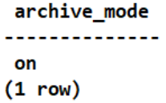

在执行数据库备份前必须开启归档模式，否则将会导致备份失败。
操作步骤
- 单实例、集群实例（pgpool、CLup、HACS）：通过修改配置文件参数开启归档模式
- 使用PuTTY，登录PostgreSQL数据库主机。需要在所有节点上执行以下操作。
- 创建存放归档日志（WAL日志）的路径，后续操作以/mnt/server/archivedir/路径为例。
mkdir -p /mnt/server/archivedir/
- 赋予运行数据库的操作系统用户postgres读写权限。
chmod 750 /mnt/server/archivedir/ chown postgres:postgres /mnt/server/archivedir/
- 执行su - postgres切换数据库的操作系统用户postgres。系统回显示例如下：
[root@pg_102_129 ~]# su - postgres [postgres@pg_102_129 root]$
- 登录PostgreSQL数据库。
cd /usr/local/pgsql/bin ./psql
- 执行show config_file;查询postgresql.conf文件所在路径。系统回显示例如下：
postgres=# show config_file; config_file --------------------------------------- /usr/local/pgsql/data/postgresql.conf (1 row) - 在键盘上按“Ctrl+d”退出登录数据库管理用户postgres，进入PostgreSQL数据库主机。
- 进入postgresql.conf文件，这里以/usr/local/pgsql/data/postgresql.conf路径为例。
vi /usr/local/pgsql/data/postgresql.conf
- 找到并修改postgresql.conf文件中的wal_level 、archive_mode和archive_command参数，如下所示：
wal_level = replica # minimal, replica, or logical archive_mode = on # enables archiving; off, on, or always archive_command = 'cp %p /mnt/server/archivedir/%f' # command to use to archive a logfile segment

- 将wal_level设置为archive（PostgreSQL 9.6及以上版本设置为replica）。
- 将archive_mode设置为on。
- 将archive_command设置为 'cp %p /mnt/server/archivedir/%f'，并确保归档日志的路径是单个路径。
- archive_command只支持cp命令，其他命令不支持。
- 修改postgresql.conf文件时，请修改文件中已存在的字段值，禁止在文件中自行新增同样的字段，否则将会影响恢复任务。
- 开启归档模式后，需要手动清理日志，否则会影响数据库的正常使用。
- 退出PostgreSQL数据库，再重启数据库：
- 单实例：
/usr/local/pgsql/bin/pg_ctl代表PostgreSQL安装路径下面的pg_ctl的路径，-D参数代表客户自行指定的数据目录，-l参数代表PostgreSQL数据库在启动过程中指定的日志输出文件，在指定日志输出文件前，需要保证该文件可创建成功。
/usr/local/pgsql/bin/pg_ctl -D /usr/local/pgsql/data -l logfile restart
- 集群实例（pgpool）：
- 先停备节点数据库，再停主节点数据库：
/usr/local/pgpool/bin/pgpool -m fast stop su - postgres /usr/local/pgsql/bin/pg_ctl -D /usr/local/pgsql/data -l logfile stop
- 先启动主节点数据库，再启动备节点数据库：
su - postgres /usr/local/pgsql/bin/pg_ctl -D /usr/local/pgsql/data -l logfile start /usr/local/pgpool/bin/pgpool -n
- 先停备节点数据库，再停主节点数据库：
- 集群实例（CLup）：
- 先停备节点数据库，后停主节点数据库：
1）登录CLup数据库管理系统。
2）在“HA集群 > HA管理”找到对应集群，单击“离线”，离线成功后，集群状态为Offline。
3）在“数据库管理 > 实例列表”找到对应的数据库实例，先停备库，再停主库，单击“停止”，停止成功后，数据库实例状态为“停止”。
- 先启动主节点数据库，再启动备节点数据库：
1）在“数据库管理 > 实例列表”找到对应的数据库实例，先起主库，再起备库，单击“启动”，启动成功后，数据库实例状态为“运行中”。
2）在“HA集群 > HA管理”找到对应集群，单击“上线”，上线成功后，集群状态为Online。
- 先停备节点数据库，后停主节点数据库：
- 集群实例（HACS）：
- 冻结HACS集群，手动执行冻结命令crm configure property maintenance-mode=true，完成冻结后才可以手动停止PostgreSQL数据库：
1）先停备节点数据库，后停主节点数据库：
su - postgres /usr/local/pgsql/bin/pg_ctl -D /usr/local/pgsql/data -l logfile stop
2）先启动主节点数据库，再启动备节点数据库：su - postgres /usr/local/pgsql/bin/pg_ctl -D /usr/local/pgsql/data -l logfile start
- 手动执行解冻HACS集群命令crm configure property maintenance-mode=false。
- 冻结HACS集群，手动执行冻结命令crm configure property maintenance-mode=true，完成冻结后才可以手动停止PostgreSQL数据库：
- 单实例：
- 重启PostgreSQL数据库后，通过以下命令查询归档模式是否已开启：
show archive_mode;
如已开启，系统回显示如下：

- 集群实例（patroni）：通过执行数据库命令开启归档模式
- 使用PuTTY，登录PostgreSQL数据库主机。需要在所有节点上执行以下操作。
- 创建存放归档日志（WAL日志）的路径，后续操作以/mnt/server/archivedir/路径为例。
mkdir -p /mnt/server/archivedir/
- 赋予运行数据库的操作系统用户有读写权限。
chmod 750 /mnt/server/archivedir/ chown postgres:postgres /mnt/server/archivedir/
- 执行su - postgres切换数据库管理用户postgres。系统回显示如下：
[root@pg_102_129 ~]# su - postgres [postgres@pg_102_129 root]$
- 登录PostgreSQL数据库。
cd /usr/local/pgsql/bin ./psql
- 在PostgreSQL数据库主机，依次执行以下命令，开启数据库归档模式。
alter system set wal_level= 'replica'; alter system set archive_mode= 'on'; alter system set archive_command ='cp %p /mnt/server/archivedir/%f';
archive_command只支持cp命令，其他命令不支持。
- 退出PostgreSQL数据库，再重启数据库：
1）先停所有备节点：
systemctl stop patroni
2）重启主节点：systemctl restart patroni
3）启动所有备节点：systemctl start patroni
- 重启PostgreSQL数据库后，通过以下命令查询归档模式是否已开启：
show archive_mode;
如已开启，系统回显示如下：